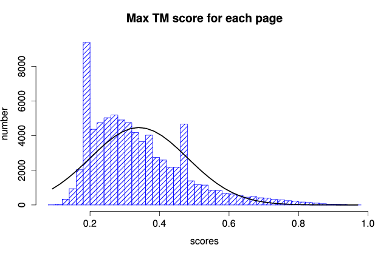

We present part of the collection "Word War I Diaries" from the State Library of New South Wales (Australia). This site is an interface to that collection developed as part of a research project called Crossreads by Jaume Nualart (PhD Candidate at University of Canberra, Faculty of Arts and Design. 2015).
This project proposes a way of exploring and reading the collection based on grouping pages according to the topics they talk about. The analysis has been done with topic models. We are preparing a publication where the process will be explained in detail.
[bigger means more pages have this topic]
Visualize more over 80.000 thousend pages from the diaries, order and read them
See the list of diaries and their authors. See main topic of each diary and read them.

This project uses data from the collection World War I Diaries, owned by the State Library of New South Walles (Australia).
All the code created to gather, transform and represent the said collection is available online at a Github account under the last version available of the licence that the SLNSW recommends in its Terms of Use.. This is Creative Commons attribution, non-commercial, share alike 3.0 Australia
The data from the collection is accessible through the SLNSW API. The transformation of the data from the collection is also available in the format generated for this project.
Follow the instructions to get the data:
This is part of a creative-arts PhD by Jaume Nualart Vilaplana at the Faculty od Arts and Design (University of Canberra)
- Research & development: PhD Candidate Jaume Nualart Vilaplana
- Mentoring and supervising: Dr Mitchell Whitelaw, Ass. Prof. Digital Design & Media Arts, Faculty od Arts and Design (University of Canberra)
- Natural Language Processing adviser: Dr Gabriela Ferraro, Text Analytics Researcher at DATA61, CSIRO (Australia). Adjunct Research Fellow at the College of Engineering and Computer Science, Australian National University (ANU).
This project is free software and it uses several external librariess and resources:
- Javascript: AngularJS, Jquery
- Data process: Python, shell, R, ImageMagick, Java
- Interface: bootstrap 2, Glyphicons
-
-
-
-
-